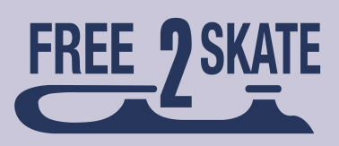
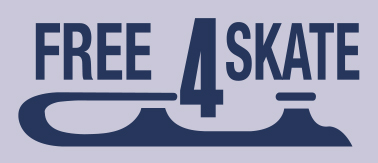
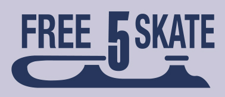
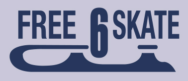

Designed to teach advanced figure skating techniques to skaters who completed the Basic Skills program
Forward inside open mohawk from a standstill position (R to L and L to R)
Backward crossovers to a backward outside edge glides (landing position), clockwise and counterclockwise
Backward outside edge to a forward outside edge transition, clockwise and counterclockwise
Two forward crossovers into a forward inside mohawk, step down and cross behind, step into one backward crossover and step to a forward inside edge, clockwise and counterclockwise
One-foot upright spin, optional entry and free-foot position (minimum three revolutions)
Mazurka (R and L)
Waltz jump
Backward inside pivots
Forward power stroking, clockwise and counterclockwise
Basic forward outside and forward inside consecutive edges (four to six consecutive edges)
Backward outside three-turns (R and L)
Upright spin, entry from back crossovers (min. four to six revolutions)
Half flip
Toe loop
Waltz jump-side toe hop-waltz jump sequence, or waltz jump-ballet jump-toe loop sequence

Alternating forward outside and inside spirals on a continuous axis (two sets)
Basic backward outside and backward inside consecutive edges (four to six consecutive edges)
Backward inside three-turns (R and L)
Beginning back spin (up to two revolutions)
Half Lutz
Salchow
Variation of a forward spiral, skater’s choice
Alternating backward crossovers to back outside edges – Four sets
Alternating mohawk/crossover sequence (R to L and L to R)
Waltz three-turns (forward outside three turn, backward outside edge glide), clockwise and counterclockwise
Advanced back spin with free foot in crossed leg position (min. three revolutions)
Loop jump
Waltz jump-toe loop or Salchow-toe loop combination
Toe step sequence, skater’s choice, using a variety of toe steps

Forward power three-turns (R and L), 3 sets each
Waltz eight, clockwise and counterclockwise
Forward upright spin to backward upright spin (3 revs., each foot)
Sit spin (minimum three revolutions)
Half loop
Flip
Split jump, stag jump or split falling leaf

Backward outside three-turn, mohawk (backward power three-turns), clockwise and counterclockwise
Five-step mohawk sequence, clockwise and counterclockwise
Camel spin (minimum three revolutions)
Waltz jump-loop jump combination
Lutz jump
Loop-loop combination

Forward power pulls (R and L)
Creative step sequence, skater’s choice, using a variety of three-turns, mohawks and toe steps
Camel-sit spin combination (minimum two revolutions each position)
Layback or attitude spin or cross-foot spin (three revolutions)